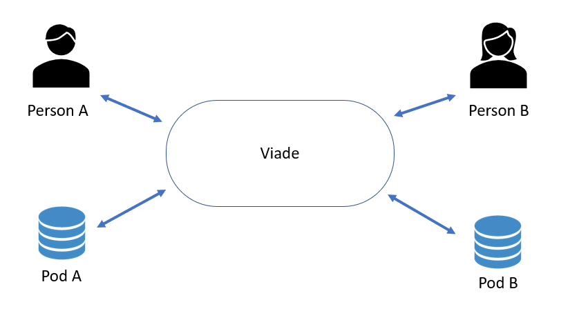
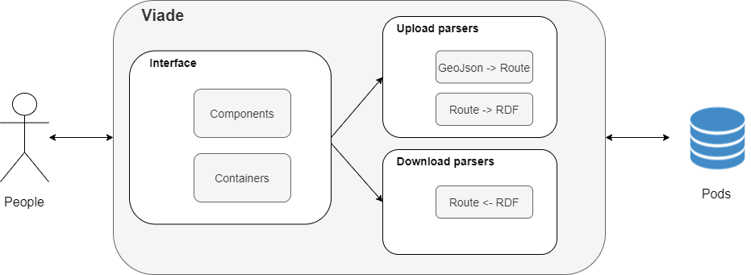
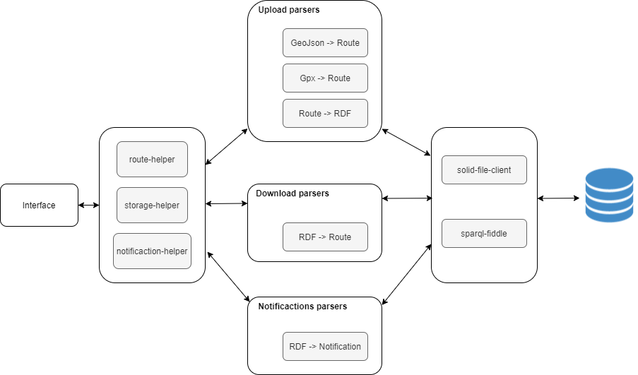
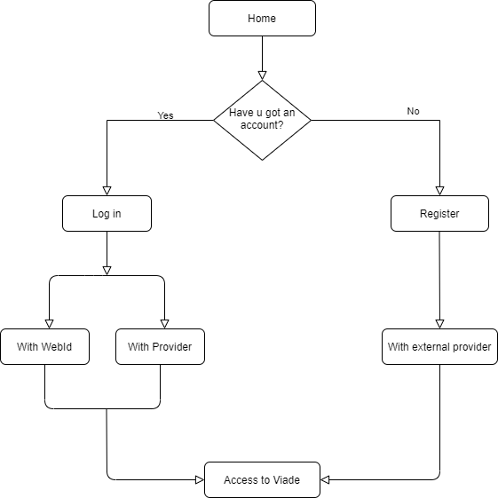
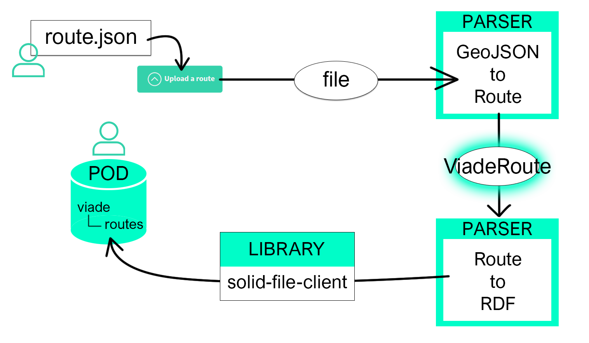
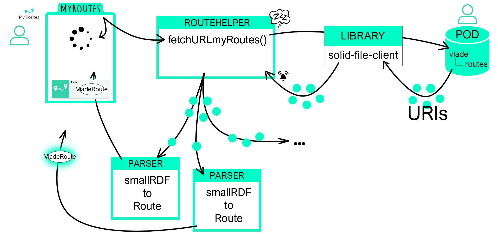
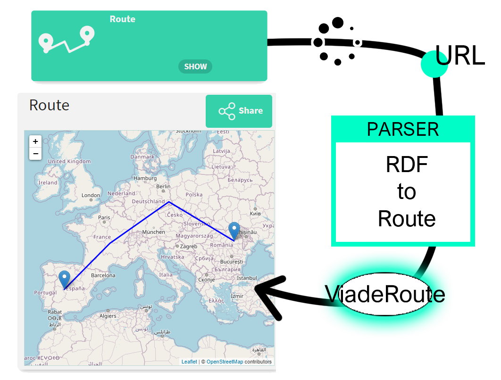
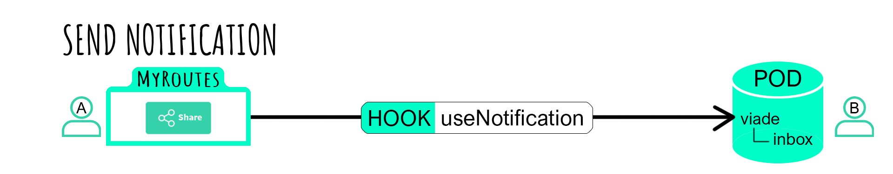
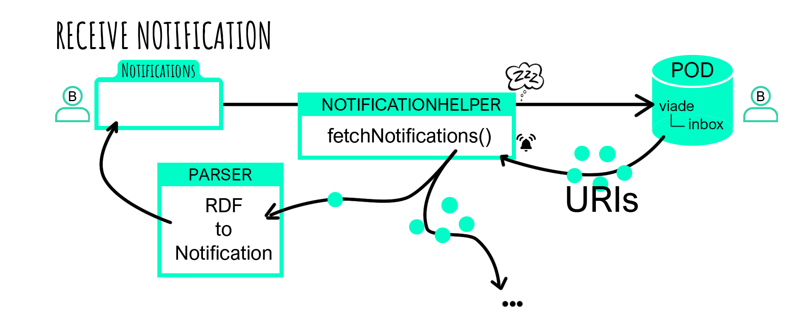

1. Introduction and Goals
A decentralized web application of routes will be made following the SOLID architecture and the React framework. With it, users will be able to store routes, visualize them on a map, complete them with photos or videos and share them with their friends.
1.1. Requirements Overview
1.1.1. Functionals
-
Users should be able to view the routes on a map and store them on their own pods.
-
By using their own pods, the information will be totally decentralized, favoring data security.
-
The user will also be able to upload images and videos with their routes.
-
Those routes will be shareable with their friends.
1.1.2. Non functionals
-
The system must be accessible and intuitive for all types of users, although special attention will be focused on favouring those with less experience in applications of this style.
-
Avoid compromising user information by decentralizing data on separate pods for each user.
-
Follow the recommendations of the W3C to ensure an error-free and safer website.
1.2. Quality Goals
Goal |
Description |
Mainteinability |
The website can be easily maintained and progressively expanded in a simple way as development progresses, either by extending existing features or by adding new ones. |
Performance |
The system must be effective and react quickly to user requests for action. |
Privacy |
User data should be stored out of the internal servers and protected to prevent third parties from accessing them. |
Testability |
Tests must be able to be carried out to check the correct functioning of the system. |
Usability |
The application must be intuitive and easy to use by any type of user. |
1.3. Stakeholders
| Role/Name | Contact | Expectations |
|---|---|---|
Application users |
These represent the end users of the application |
Have at their disposal an application that allows them to store their routes and share them with their friends. |
Teachers |
Who evaluate the project being carried out |
Find a project that meets the above requirements. |
Developers |
Who will be in charge of developing the product |
Make a system that meets the requirements above. |
2. Architecture Constraints
3. System Scope and Context
The scope of our project is a website where the users can create, explore and share routes without the related data being stored on a third-party server. So, a sharing website where all the shared data belongs to the private server of each user making use of SOLID.
Each user will be able to import new routes through GeoJSON or GPX files, save them on their PODs and share them with their friends. The shared routes will have titles, descriptions and attached media.
The application will be able to load and show routes made with similar apps.
3.1. Business Context
A user can store routes of various types that will be kept in his POD. He can also share the routes and other type of files with their friends
-
Regular user: Stores his own routes.
-
Sender: Sends routes to other user
-
Receiver user: Receives notifications containing routes from other user.
-
Pod: Each user has a POD where the routes and the shared information are stored.
-
Viade: Decentralized application to store routes and share with other people.
3.2. Technical Context
The descentralized server system of the application will make use of SOLID storing all the user’s data on their respective PODs. This will be integrated through the use of React, which will be the library of Javascript used to make all the interfaces of the application. An important key in the interaction and manageability of the web when communicating with the users will be the maps, which will be offered making use of OpenStreetMaps API.
4. Solution Strategy
Viade is a decentralized route management system based on the Solid specifications.
4.1. Technology decisions
4.1.1. Libraries
-
React Bootstrap : To implement the layout of our application
-
Solid React Components :To help with some of the POD features (login, registration, friends list)
-
Solid-File-Client : To access POD resources
-
sparql-fiddle : To query data stored in PODs.
-
Leaflet and OpenStreetMap : To display the routes on a map
-
Jest : Testing
-
Toastify: :To display information to the users
-
GPXParser: To help manage GPX-formatted routes
4.1.2. Languages
-
Javascript
-
CSS
-
SPARQL
4.1.3. Other decisions
-
We support GPX and GeoJSON(LineString) formats.
-
NodeJs to implement the Solid server
-
Using the Solid recommendations and specifications
4.2. Organizational decisions
To develop this project we designed a workflow that would ensure flexibility and consistency. The new functionalities would be selected each week in reunions, those new characteristics would be develop alone or in pairs and they should be feasible to finish in one week.
Each feature would be supervised and/or adapted by one of the coordinators, we will have two, one for the front-end and one for the back-end. Below that we decided some extra specializations to optimize our strengths and time.
Although all members have contributed to almost all parts of the implementation, the overall distribution is:
-
Rut Alfonso Garcia, in charge of the decisions about file formats and the parsers.
-
Carlos Menchaca Mosteiro, mostly dedicated to POD and file loading issues.
-
Manuel Lorenzo Vega, file uploading and directory management from the client side.
-
Daniel Pancho Cueto, specialized in the testing and quality assurance.
-
Christian Peláez Fernández, back-end coordinator and specialist of the SPARQL queries.
-
Carmen Sirgo Lopez, back-end and front-end bridge defining all its communication.
-
Ricardo Soto Estévez, front-end coordinator and UI/UX designer.
4.3. Solution-approaches
| Quality goal | Solution approach |
|---|---|
Adaptability |
Colorblind friendly color scheme |
Interoperability |
|
Maintainability |
Travis, Codecov, Modular design |
Scalability |
Modular design, genericity and abstraction |
Testeability |
Codecov |
Usability |
Two-step operations and functionality color remark |
4.3.1. Adaptability approach
4.3.2. Scalability approach
4.3.3. Usability approach
5. Building Block View
This section is a decomposition of our system into diagrams. Each level is more specific than the previous one.
5.1. Level 1
Level 1 shows us a global vision of the project.

| Name | Responsibility |
|---|---|
Pod |
Description in the glossary |
Viade |
Our Application |
5.2. Level 2
Level 2 shows us a global vision about project architecture.

| Name | Responsibility |
|---|---|
Components and Containters |
Generate the code to show the page using React |
GeoJson → Route |
We transform de GeoJson into an object Route in order to make route managment easier from our app. |
Route → RDF |
We transform de object Route into RDF to be able to upload it to a Solid Pod. |
Route ← RDF |
We download RDF object and transform it into object Route to show it. |
5.3. Level 3
Level 3 shows us a concrete vision about connections between interface and POD.

| Name | Responsibility |
|---|---|
Components and Containters |
Generate the code to show the page using React |
route-helper |
Service that manage route methods |
storage-helper |
Service that manage storage methods |
notificaction-helper |
Service that manage notificaction methods |
solid-file-client |
A library for managing Solid files and folders. |
sparql-fiddle |
An online sparql-fiddle app allows you to load from URL, create, or cut and paste RDF and SPARQL into a form and then run the query, edit and re-run. |
6. Runtime View
Here are some Scenarios to understand how Viade works
6.1. Log in
This is a general view of the access to the web

6.2. Upload a Route
This is a general view of the process to upload a route

6.3. Load your Routes
This is a general view of how the routes are loaded from the POD

6.4. Display a Route
This is a general view of how the Route are loaded to be displayed

6.5. Send a Notification
This is a general view of how the Routes are shared

6.6. Receive a Notification
This is a general view of how incoming Notifications are handled

6.7. Infrastructure Level 1
As Viade is a decentralized browser application, we only need 3 elements per user:
-
The user’s computer. Which must have a browser to access the application. We recommend using Google Chrome as other browsers like Internet Explorer may not have all the JavaScript functionalities used to run the application. This also means that the user does not need a very powerful computer, just Internet conexion.
-
The SOLID’s server. Here is where the user’s POD is. All the routes and multimedia data are stored in the POD. Thanks to the SOLID de-centralized authentication mechanisms it is not necesary to have a central server for the signing up/login process.
-
The GitHub Pages server. This will be the Web Hosting Service for the application.
- Motivation
-
We think choosing a browser application is a good way to be open to more public, as some clients would rather access to the application online than having to install a desktop application. Moreover, being a de-centralized application can appeal clients who only want to store their routes somewhere instead of sharing them online, in this way, we can satisfy both types of clients (the ones who want to share routes and the ones wo want to keep them).
6.8. Infrastructure Level 2
-
Solid POD: This is a personal storage space where you caan decide which things are public and private and who can see them (people, apps…).
-
GitHub Pages: Theese are public webpages hosted and published through GitHub. They can be managed via the web or locally in a computer.

7. Cross-cutting Concepts
7.1. Domain Concepts
i.e domain models, business data model
7.2. User Experience concepts (UX)
User interface
Ergonomics
Internationalization
How to make the system usable in international settings, translation, screen-layout, wording and other
7.3. Safety and security concepts
Security
i.e. how to achieve confidentiality, non-reputiability and other goals.
Safety
Safety-critical systems are those whose failure or malfunction may result in death or injury or severe financial loss
7.4. Architecture and design patterns
recurring patterns within the system
7.5. “Under-the-hood” concepts
Persistency
how / where to store and retrieve data
Process control
Transaction handling
How to handle technical or business transactions, i.e. to achieve ACID properties
Session handling
How to handle user/client sessions
Communication and integration
How to integrate with other systems, how to communicate (i.e. sync, async, pub-sub…)
Exception and error handling
What errors to handle, how to handle exceptional situations
Parallization and threading
How to parallelize tasks, how to create/spawn/manage processes
Plausibility checks and validation
i.e. client-side validation, how to verify/check data, input, results.
Business rules
i.e. how to use a rule-engine, how to implement/configure business rules, how to change those…
Batch processing
How to process data in batches (i.e. offline processing)
Reporting
How to create reports, how to gather the required data, how to render the results
7.6. Development concepts
Build, test, deploy
Code generation
Migration
Configurability
7.7. Operational concepts
Administration
Management
Disaster-Recovery
Scaling
Clustering
Monitoring, Logging
High Availability
Load balancing
8. Design Decisions
Version-control system |
Github |
Programming language |
JavaScript |
Distributed application structure |
Solid |
Main library |
React |
Architectural pattern |
Domain Driven Design |
9. Quality Requirements
9.1. Quality Tree
This development aims to fulfill the quality requirements specified in the following tree diagram.
9.2. Quality Scenarios
Achieving the expected response of the application for the following scenarios is the goal to meet the quality expectations.
9.2.1. Maintainability
Scenario #1: Documentation updated
Details
| Who |
New member of the development team |
| When |
Joining the development |
| Where |
Documentation |
| What |
The documentation should offer easily all the information the others developers will need |
| How |
Keeping the arc42 updated |
Scenario #2: Readable code
Details
| Who |
New member of the development team |
| When |
Joining the development |
| Where |
Code |
| What |
The code should be easy to understand to others |
| How |
Keeping it legible, commented and following style guides |
Scenario #3: Extension of the functionality
Details
| Who |
Any member of the development team |
| When |
Starting to develop a new function |
| Where |
Code |
| What |
The code should be easy to extend its functionality |
| How |
Keeping it as modular as possible and implementing software designs. |
9.2.2. Performance
Scenario #4: Warning an user about an invalid operation
Details
| Who |
Any user |
| When |
Making a mistake or invalid operation |
| Where |
The view |
| What |
The application should register and notify the error at the moment, the warning should be clear and comprenhensible |
| How |
Checking all the inputs at the moments and having a strong exception build |
9.2.3. Privacy
Scenario #5: Someone tries to access the data of other user
Details
| Who |
Any user |
| When |
Someone trying to access their data |
| Where |
The service |
| What |
The application should instantly notify the affected user about the access and block it |
| How |
Checking the identification of each user in every operation |
9.2.4. Testeability
Scenario #6: Testing new functionality
Details
| Who |
Any developer |
| When |
Adding new functionality |
| Where |
Any point of the application |
| What |
Any new functionality added should be tested to confirm it’s well implemented |
| How |
Through a battery of unit tests |
Scenario #7: User beta testing
Details
| Who |
A standard user |
| When |
The application is usable |
| Where |
Any point of the application |
| What |
Try the app and give some feedback |
| How |
Through an issue on GitHub |
9.2.5. Usability
Scenario #8: Colorblind clarity
Details
| Who |
Colorblind user |
| When |
Using the application |
| Where |
GUI |
| What |
The user interface must be adapted to be easily usable by all the colorblindness types |
| How |
Through the use of a valid palette, icons and texts |
Scenario #9: Navigable using keyboard
Details
| Who |
Any user |
| When |
Using the application with keyboard |
| Where |
GUI |
| What |
The user should be able to navigate through the whole application using only the keyboard |
| How |
Through the use of correct shortcuts, tab navigation and mnemonics |
Scenario #10: Compatibility with multiple formats
Details
| Who |
Any user |
| When |
Importing or exporting routes |
| Where |
Routes manager |
| What |
The user should be able to import and export the routes to, at least: GeoJSON, KML and GPX |
| How |
Through the use of parsers and the RouteViade object |
Scenario #11: New user understanding the application fast
Details
| Who |
New user |
| When |
First time using the application |
| Where |
GUI |
| What |
The user should be able to learn to navigate and use the app instantly |
| How |
Keeping a clear and straightforward user interface |
Scenario #12: Mobile compatibility
Details
| Who |
Mobile user |
| When |
Using the application |
| Where |
The whole application |
| What |
The user should be able use the application without problems |
| How |
Making the interface and functionality compatible with lesser screens |
10. Risks and Technical Debts
Any project that is undertaken is inevitably going to have a number of risks, both technical and team-related. At the same time, there will also be motivations and positive events on which we can rely to continue the work successfully.
In this case, we will have the support of the teachers of the subject, who will advise us and consult our doubts and problems. In addition, as far as the internal organization of the team is concerned, we have decided to create "user histories" containing all the functionalities, modifications and tests that must be carried out on the application.
-
SOLID. SOLID’s architecture is something we are not familiar with at all, so working with this might be a little difficult when it comes to starting the project, because it will require a long research and adaptation process, and also during the development stage, for the reason that it might appear some problems that we probably don’t know how to fix.
-
React. Like SOLID, React is a framework totally new for us, so we must get information about this technology before starting to produce the application. This not only implies documenting about it, but we must also investigate how to connect it with SOLID and how to integrate both with the rest of the system.
-
Little experience in web development. Before the beginning of this project, the only contact we’d had with web application development was the one we acquired in the SEW course. In addition, this knowledge was not particulary high, because a four-month subject is’t enough to study the complexity of web design in depth. That’s why we must do a biggest effort to be able to get acceptable results.
-
Stranger team. Even though this is probably going to be the usual thing for us in the future, the truth is that working with strangers is always a challenge and a risk, because the chance of not being able to get alog with our workmate, lack of communication or not reaching agreement despite the effort put into the dialogue is present at all times.
-
Large team. Again, this is part of our future work as software developers or software architects and we must be prepared for it. However, until we get used to it, sharing team with six other people can be a problem, because the more members it has, the more difficult it will be to coordinate it. This is why we must work to encourage good communication between us.
-
Limited time. For the first presentation of the application, we have a total of three weeks in which we must make a first prototype that includes as many functionalities as possible. Linking this limited time with everything described above could become a problem, preventing even the successful completion of this first prototype.
11. Glossary
| Term | Definition |
|---|---|
Solid |
Solid is a web decentralization project led by Tim Berners-Lee.The project "aims to radically change the way Web applications work today, resulting in true data ownership as well as improved privacy" by developing a platform for linked-data applications that are completely decentralized and fully under users' control rather than controlled by other entities. |
POD |
Web-accessible personal online datastore. Each user can have one or more pods from different pod providers, and can easily switch between providers |
Linked Data |
Is structured data which is interlinked with other data so it becomes more useful through semantic queries. |
RDF |
RDF stands for Resource Description Framework and is a standard for data interchange, developed and agreed upon by W3C. |
Turtle |
Is a syntax and file format for expressing data in the Resource Description Framework (RDF) data model |
SPARQL |
Query language for RDF |
GPX |
An XML schema designed as a common GPS data format for software applications |
GeoJSON |
An open standard format designed for representing simple geographical features,based on the JavaScript Object Notation (JSON). |
About arc42
arc42, the Template for documentation of software and system architecture.
By Dr. Gernot Starke, Dr. Peter Hruschka and contributors.
Template Revision: 7.0 EN (based on asciidoc), January 2017
© We acknowledge that this document uses material from the arc 42 architecture template, http://www.arc42.de. Created by Dr. Peter Hruschka & Dr. Gernot Starke.